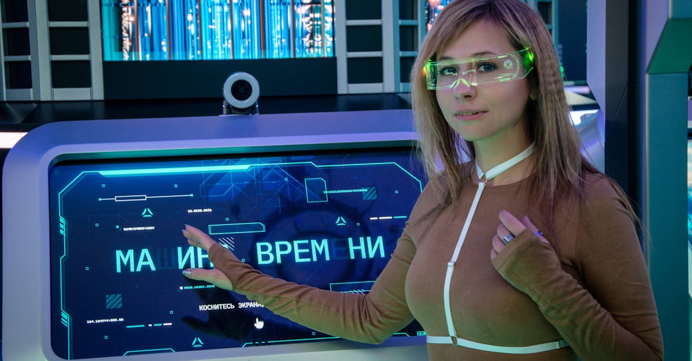

■ 说透 / SHUOTOU · 知览
SUBTITLE
眼镜没有在这个月忽然开窍，先升温的是手机边上那道入口

4月13日 下午，华为终端官微 把 4月20日 这个时间点直接甩了出来，宣传语也挺直白，叫 “实力‘眼’技”。截至我写这稿的 4月19日 晚上，它还没正式亮相。再往前倒十来天，Meta 刚把配镜版 Ray-Ban Meta 端上桌，起售价 499 美元。又过了一周，4月8日，Muse Spark 上线，官方顺手补了一句，这套新能力接下来会进 AI glasses。
你刷到这几条新闻的时候，大概率会有种感觉，怎么这帮公司像约好了一样，突然全把脸贴到眼镜上了。去年这东西在很多人眼里还像个极客玩具，拍两段第一视角视频，听个歌，顺手问一句天气，热闹归热闹，离“全员开打”还差点意思。可今年不一样，手机厂、模型厂、光学厂、渠道商，都开始往同一个小框架里挤。
那为啥偏偏是现在呢？
4月13日：华为 官宣 4月20日 发布 AI 眼镜
3月31日：Meta 上新配镜版 Ray-Ban Meta
4月8日：Muse Spark 明说会滚动进入 AI glasses
3月25日：IDC 说，2025 年 XR 市场出货 +44.4%，主驱动力已经换成 smart glasses
2月26日：Counterpoint 给出更狠的数字，2025 年下半年全球 smart glasses 出货 +139%
很多人第一反应会先看技术表，芯片是不是更省电了，摄像头是不是更小了，镜腿里能不能再塞一块电池。可说实话，这些零件去年也在，前年也不是完全没有。高通 AR1、常驻语音、第一视角拍摄、多模态识别，都不是什么这个月才从实验室掉下来的新东西。真让大厂重新冲回来的，是它们忽然把一笔账算清楚了，眼镜这玩意离手机太近，离人又更近。
— 01 —
手机过去十几年最狠的地方，不只是它卖得多，还在于它垄断了入口。搜索、地图、支付、短视频、消息分发，最后都要回到那块屏幕上排队。但 AI 这轮变化有个很烦人的地方，它不爱排队。你刚抬头看见一家店，刚走进地铁，刚听清别人报了一个地址，那个念头如果还得先掏手机、亮屏、解锁、找 App，很多时候就没了。眼镜恰好卡在那个缝上，它一直戴在脸上，摄像头看得到，麦克风听得到，扬声器还能立刻回嘴，这就像把原来藏在裤兜里的入口，硬生生拽回了眼前。
华为 说的是 “实力‘眼’技”，Meta 写的是新模型会进入 AI glasses。一句偏发布会，一句偏路线图，落点却是同一个地方：谁都想先站到你的视线边上。
你想啊，同样一句“帮我找附近那家店”，放在手机里，它还是搜索；戴到眼镜上，它就可能顺手接走 定位、导航、识物、支付、拍照、翻译。这时候卖的已经不只是一个硬件壳子了，而是那一下“我刚好想到”的截流权。谁先截住，谁就有机会把后面的服务、广告、交易、订阅，全往自己口袋里塞。
国内这波升温也得放到这个账本里看。华为 手里有 鸿蒙 和全场景协同，眼镜一旦成了新端口，手机、平板、车机、耳机那套联动就能继续放大。阿里 往眼镜里塞 千问，图的也不是只卖一副镜架，它更想把 搜索、支付、生活服务 做成抬眼即用。Rokid 和 雷鸟 这种老牌选手更现实，光学、重量、续航、配镜、线下展示，它们已经踩了几年坑，现在终于等到大模型把需求抬起来。还有个很接地气的催化剂，2026 年国补 第一次把 智能眼镜 纳进去了，单件 6000 元 以下按 15% 补，封顶 500 元，这对一堆刚好卡在两三千块的产品，等于国家替你先砍了一刀心理门槛。
入口重新值钱以后，桌上的人一下就变多了
- **手机厂** 想守住自己原来的分发权，不让 AI 把流量绕走
- **模型厂** 想找一个比 App 更贴身的容器，把助手做成常驻
- **光学和供应链公司** 终于等到量产窗口，不想继续只当幕后零件商
- **渠道商和配镜体系** 也开始有戏，因为眼镜这门生意最后还得落到脸型、度数和舒适度
— 02 —
好，到这儿你可能觉得，既然大家都冲了，接下来拼命把显示做炫、把参数做满就行。但有个反向证据咱不能假装看不见。 Counterpoint 在 2月26日 给的数字很扎眼，2025 年下半年全球 smart glasses 市场里，Meta 一家吃掉了 82% 份额。 这说明战火看着很热，桌上的肉暂时还是集中在一个人碗里。还有，真正跑量的主力也不是最科幻的全彩 AR，反倒是更像普通眼镜、先把 拍摄、语音、佩戴、配镜 做顺的那批。4月8日 那份报告里，waveguide 设备出货涨了 600% 以上，听着吓人，可基数本来就小，涨得快不代表已经坐上主桌。
这事儿最反直觉的地方就在这儿。大家嘴上都在喊 AI 眼镜，可眼下最关键的竞争点，很多都土得很，鼻托舒不舒服、镜框像不像普通眼镜、线下能不能配度数、录一段视频会不会发烫、一天戴下来耳朵疼不疼。Meta 在 3月31日 先推配镜版，其实就是在告诉你，真正的爆量门槛不在未来感，而在你愿不愿意把它当成日用品。谁先把“像眼镜”这件事做稳，谁才有资格继续谈“像电脑”。
所以这场仗现在看起来像硬件大战，骨子里还是入口大战。手机没有退场，iPhone 和安卓也不会因为一副眼镜明天就变成前朝遗老，但它们旁边那块原本空着的位置，又开始值钱了。只要大模型还想更早接住人的意图，谁都不会甘心把那块地方让出去。
再说得更直接一点，AI 眼镜 今天最诱人的地方，在于大厂又看见一次重写流量分发的机会。科幻感当然会卖货，可真正让人睡不着的，还是入口。上一轮大家抢的是桌面和手机屏，这一轮抢的是你抬眼、开口、转头的那一下。那一下很短，可后面连着的，可能是下一个十年的服务入口。
眼镜今年没有突然变聪明。是大厂发现，挂在脸上的那道口子，已经能重新通向钱、数据和分发了。
· · ·
ZAYEN知览
说透 · SHUOTOU · 知览